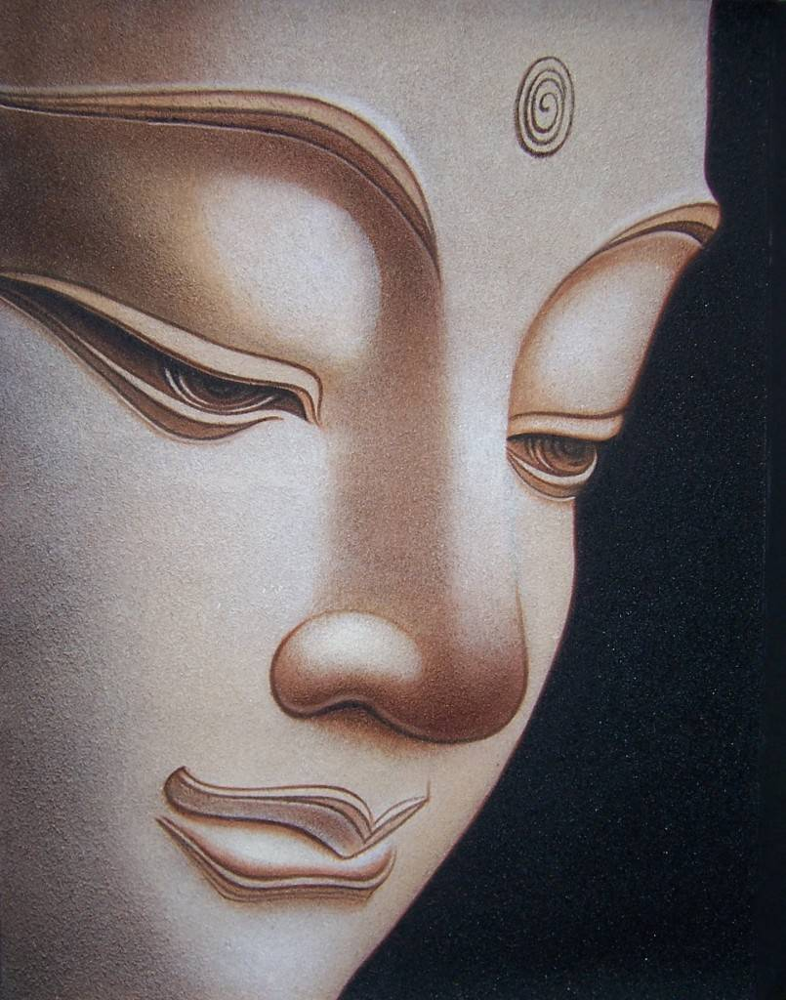

1. Many people consider the recital of namaskaraya followed by the 24 supreme qualities of the Buddha, Dhamma, Saṅgha (Tiratana vandanä or Tisarana vandanä) in three possible ways: (i) recite them mechanically (and erroneously), (ii) disregard them as unimportant, or (iii) even consider the practice as "mythical" per benefits of their recital.
- These qualities are called "suvisi guna", where suvisi means 24 and guna are the qualities.
- These qualities (and the meanings of the words Tisarana Vandana) are discussed briefly in "Supreme Qualities of Buddha, Dhamma, Saṅgha"; correct way to recite them are also discussed there.
2. As I have discussed in many posts, there are many things in this world that we do not really understand. Many of the Buddhist practices have become "mystical" simply because their true interpretations as well as their correct usage have been lost. This current topic is a good example. One can reap many benefits by understanding the true meanings of these phrases AND by reciting them correctly. I have experienced these benefits.
- Now, this does not mean one can attain Nibbāna (or the Sotāpanna stage) by reciting them day and night. This is simply one of the many tools available to calm the mind and to slowly but surely change one's character (gati) over time.
- As everything else with Buddha Dhamma, it is all in one's mind. If one has the motivation and the drive to learn and apply these tools, they can bring many benefits not only in this life but in future lives. But it is not like taking a pill for a headache; one cannot expect results quickly. We have developed "bad gati" over beginning-less rebirths and it is not easy to change them quickly.
3. First of all, we all have seen how it is possible to convey a given message by just changing the tone. The words, "come here" can give different meanings based on the way how the words are uttered. When a parent says, "come here" to a child with love and affection, the child would be delighted to oblige. The same parent can get angry at the same child and yell, "COME HERE!", the child i likely to cringe and back out afraid of a possible spanking.
- The "gati sound" ("gati handa" in Sinhala) in the two cases were totally different even though the words were the same; see below. The way the same phrase was uttered made a difference to the child's mind.
4. Many Pāli words have a different kind of power too; certain words can influence the mind strongly. As we will discuss in future posts, the early humans had a single language called Magadhi from which Pāli words originated. It was a universal language with the effects conveyed by the way the words were pronounced.
- This is why I mentioned in other posts also that Pāli is a phonetic language. Grammar rules are secondary.
- Just by listening to a recital of a pirith desana (i.e., recital of suttā) can make a change in one's mindset, which may be even visible to others. There is a subliminal message (sanna) in the suttā that the mind can grasp, even if the person may not understand what is being said.
- The words themselves, how they are uttered, and even who utters them, are "embedded" in "gati sounds".
5. There are several such examples mentioned in the Tipiṭaka. A famous example is about a frog who was attentively listening to a discourse of the Buddha. Of course a frog could not understand what the Buddha was saying. But the "gati sound" ("gati handa" in Sinhala) that came from the Buddha combined with sansaric gati of the frog led the frog to attentively listen to the pleasing sound from the Buddha and to have a pleasant mindset.
- While listening to the discourse, the frog was accidentally killed by the walking stick of a person there, and the frog was born in a deva loka instantaneously. His name was Manduka deva and he immediately realized how he was born there. He came back to listen to the same discourse and attained a magga phala.
- Then there were a bunch of bats who resided in a cave that was used by Bhikkhus who used to recite pirith every night. Those bats were all said to have born as children in the same village and to have attained Arahantship later. There are few other accounts as well.
6. These may sound like myths, but when one learns Abhidhamma and understands the power of a "somanassa sahagata citta", (or a "thought with joy"), one could make the connection. We all, including animals who had been humans at some point in the past, have accumulated good kamma seeds as well as bad ones from the past.
- One of the factors that comes into play at the dying moment is the state of the mind. If the mind is highly perturbed or is "covered with" panca nivarana (see, "Key to Calming the Mind – The Five Hindrances"), then it allows conditions for a bad kamma seed to come into play. But while listening to Dhamma or pirith, those panca nivarana are temporarily suspended and that allows for a good kamma seed to come into play; see, "Patisandhi Citta – How the Next Life is Determined According to Gati".
- One's gati are not fixed. Even a person with many immoral gati has some moral ones as well. What kind of gati operates at a given moment depends on one's state of mind.
7. Now we can come back to the issue of "gati sound" that we mentioned in #5 above. Tisarana vandanä especially has the power to change one's mindset, if recited correctly.
- Entities with same gati always naturally tend to be close to other entities with same gati. This can be clearly seen anywhere. People who like sports get together. People like to party all the time, hang out with others who like to do the same. This is discussed in a simple but illustrative post: "The Law of Attraction, Habits, Character (Gati), and Cravings (Āsavas)".
- This is why in Asian Buddhist countries it is customary to turn on pirith (recital of suttā) on the radio in the mornings and/or at night. This is supposed to keep undesired beings away and attract benevolent beings to the houses. It is actually effective if done properly. Those pretas with immoral gati do not like to hang around when such chanting are being played. On the other hand, devas of the lowest realm (Bhummataka devas) like to stay close to such sounds/environments.
8. Another related property is "gati ruva" or "gati picture". The obvious example is a picture of a Buddha, not the distorted laughing Buddha, but the serene Buddhas like shown below.

- This is why most meditators keep a Buddha statue in the meditation room. It is just another factor that helps in getting to the right mindset.
- Then there is "gati suvanda" or "gati smell". Burning incense gives an odor that is also compatible with a meditation environment. A perfume on the other hand, is a distraction. A good perfume is compatible when going out on a date; that sets a compatible environment for sense pleasures.
- All these subtle things add up to make a difference. And how much of a difference depends on the person too. Some people do not need any of such "incentives" to get onto even jhānā. But for some others they could make a difference.
9. In order to establish this point we can think about a "party atmosphere" compared to a "meditation atmosphere". When someone organizes a party or a dance, one decorates the room with bright colors, eye catching pictures, sensual fragrances, loud music, etc. That is the environment with "matching gati" for such an event. That would be a disastrous setting for a meditation session; one would not be able to concentrate at all.
- On the other hand, a meditation atmosphere is not compatible for a dance. One cannot dance to pirith or to Tisarana vandanä. It provides a setting that is calm and peaceful, and conducive for contemplation.
- Another aspect is that people when attracted to Dhamma will start skipping parties as I have. I would rather stay home and learn Dhamma rather than going to a noisy environment let alone a party.
- One will start associating with different people too, if one seriously gets into Dhamma. It is not done by sheer will power; rather it just happens because one's gati change. It is just natural for "likes to get together with likes", the Law of Attraction: "The Law of Attraction, Habits, Character (Gati), and Cravings (Āsavas)".
10. This concept actually works at a deeper level too. We emit electromagnetic radiation (cittaja rupa) according out gati and mindset at a given moment. Whatever the types of Dhamma that are attracted at any given time are compatible with that state of the mind. A deeper discussion is at "What are Dhamma? – A Deeper Analysis".
- For example, when we are angry we never receive more good thoughts. If we are arguing with someone, what always comes to mind are just bad thoughts, bad memories about that person.
- On the other hand, when we are calm and in a joyful mood, we mostly think about good memories.
- When one is at a funeral, one's thoughts and complexion becomes attuned to that environment: one sees and hears people crying, and one gets sad and one's face shows that as well; one does not feel like laughing. On the other hand, when one is at a party it is totally opposite atmosphere, and one feels like laughing and dancing.
- Other people can also be affected by our mindset. It is quite pleasant to look at a Buddhist monk. They just have that calm demeanor which is part of their cultivated gati. In fact, our bodies also change over time according our gati. There are other people whom we can instantly recognize as "rough characters".
- This is a deep subject with many complexities and even exceptions. But I hope I have been able to convey the basic idea.
11. When one is reciting Tisarana vandanä correctly in a suitable environment, one's gati will change at least during that short time for the better. One will be able to grasp deeper concepts during meditation following the recitation. When one does this over a long time, one's salient gati will gradually change too.
- I know mine have changed over the past several years, and in particular within the past several months. It is a process that needs a bit of time to get traction, and then the results becomes clear one day. When I first wrote the original post (which I just revised), my enthusiasm for reciting Tisarana vandanä was not that high.
- However, I do not want to over emphasize this aspect. It can be considered a tool that could make a difference for some people.
12. For those who may be trying to cultivate the anicca sanna (i.e., comprehend what is meant by anicca, dukkha, anatta), reciting Namasakaraya followed by Tisarana vandanä could be helpful. I am providing the recordings below.
- The Buddha has also stated that when one is in a dangerous situation or gets frightened by something, reciting Budu Guna (Ithipi sö Bhagavä.....) can help getting rid of the fear. One could recite this just before going to bed and it might help with falling asleep; again, it depends on one's own gati, how faithfully one does it, whether it is done with saddha, etc.